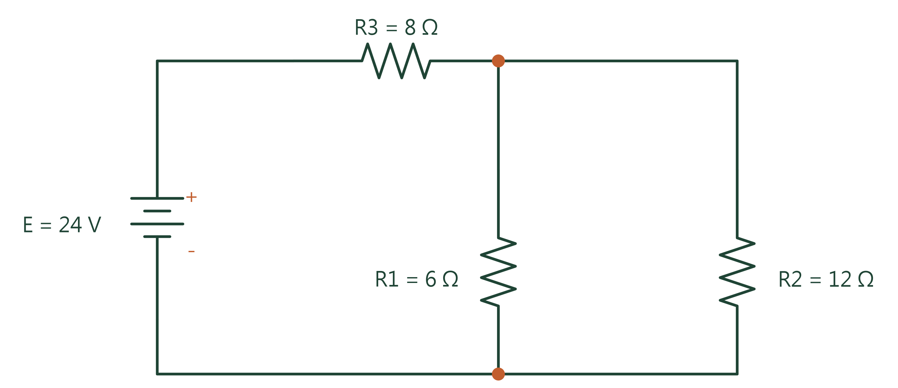

技術型高中電機電子群專屬！結合 Google Antigravity 代理人架構，完全突破傳統問答局限，實現「自然語言出題 ➔ 閉迴路標準電路圖繪製 ➔ 現代化網頁轉型 ➔ GitHub Pages 終身免費推播」一站式落地！
從零代碼環境配置、AI 視覺推論到物聯網單晶片應用，滿足高中職教師課堂教學與雲端分享的所有環節。
電機電子群統測命題規格！整數手算設計，搭配 Schemdraw 繪製 IEEE 標準鋸齒電阻與單迴路模型。
專為教師打造！16:9 寬螢幕、28~44pt 大字級、原生進入動畫與溫暖校園色系。
Antigravity 代理人自主執行示範影片！搭配微軟自然中文語音旁白合成與 1080p 高畫質渲染。
完整記錄開立帳號、建立倉庫、PAT 金鑰產生（馬賽克資安遮罩）與代理人推播提示詞咒語！
針對 固緯 GDS-2102E 示波器 ✕ MFG-2110 信號產生器 ✕ 丙級試題二 的完整工程級提示語！
專為教師公務研習設計！透過 Chrome DevTools MCP 原生協議，實現「無障礙人機接力、自動巡航與 PDF 證書下載」。
解決實習現場紙本手寫成績痛點！從手寫掃描檔（PDF/圖片）多源自動校對，提取為結構化 Excel 總表與互動分析儀表板。
結合最新 Ultralytics YOLO 物件偵測技術，帶領學生從「自訂資料集標註 ➔ 模型輕量化訓練 ➔ 即時視訊串流推論」快速打造邊緣 AI 專題。
高職實習微控制器最佳利器！透過 Antigravity 代理人自動撰寫 MicroPython / Arduino C++ 韌體，快速實現感測器連雲與智慧控制。
點選下方頁籤切換題目，點擊「查看詳解」即可彈出完整公式推導與誘答防呆分析！

【題幹】 直流電源 E = 24 V。電阻 R₁ = 6 Ω 與 R₂ = 12 Ω 並聯後，再與 R₃ = 8 Ω 串聯。求總電阻 RT 及總電流 IT？
標準答案： (A) RT = 12 Ω, IT = 2 A
精確算式： R₁ // R₂ = 4 Ω ➔ RT = 4 + 8 = 12 Ω ➔ IT = 24 / 12 = 2 A
免安裝、純瀏覽器直接操作！結合 GW INSTEK GDS-2102E 示波器 ＋ MFG-2110 任意波形信號產生器，支援波形量測、靜態觸發鎖定與台灣工業電子丙級術科 12 題組自動評分。
本系統由「工程級提示語（Master Prompt）」自動生成，完美遵循固緯官方手冊物理規範。學員可自由切換檔位、旋鈕微調、開啟 10 步驟自動教學，或模擬丙級檢定電路板節點量測。
教師研習與教學升級，全流程一站式落地
所有 Python 工具與出題依賴均運行於隔離沙盒中，零安裝零報錯，保護學校與個人電腦系統安全。
掌握 Capacity、Role、Instruction、Standard 四大黃金構件，告別瞎聊問答，讓 AI 產出專家級標準答案。
透過個人專屬倉庫一鍵推播，終身免伺服器租金，手機、平板、智慧黑板掃 QR Code 隨點隨看。
【題幹】 直流電源 E = 24 V。電阻 R₁ = 6 Ω 與 R₂ = 12 Ω 並聯後，再與 R₃ = 8 Ω 串聯。求總電阻 RT 及總電流 IT？
✔ 正確答案：(A) RT = 12 Ω, IT = 2 A
1. 並聯等效電阻：R₁ // R₂ = (6 × 12) / (6 + 12) = 72 / 18 = 4 Ω
2. 總等效電阻：RT = 4 + 8 = 12 Ω
3. 總電流：IT = E / RT = 24 / 12 = 2 A
🚨 常見盲點：部分學生易先算 6+12=18 再並聯 8，詳解已清楚標記避免踩雷！
【題幹】 戴維寧等效開路電壓 Eth = 18 V，等效電阻 Rth = 6 Ω。外接負載電阻 RL = 3 Ω，求負載電流 IL？
✔ 正確答案：(B) 2.0 A
1. 單迴路負載電流公式：IL = Eth / (Rth + RL)
2. 代入數值：IL = 18 / (6 + 3) = 18 / 9 = 2.0 A
🚨 防呆叮嚀：求 Rth 時獨立電壓源應「短路 (0V)」，學生常誤當開路！
【題幹】 戴維寧模型 Eth = 20 V, Rth = 5 Ω。求使負載 RL 獲得最大功率之條件與最大功率 PL(max)？
✔ 正確答案：(A) RL = 5 Ω, PL(max) = 20 W
1. 阻抗匹配條件：RL = Rth = 5 Ω
2. 最大功率計算：PL(max) = Eth² / (4 × Rth) = 20² / (4 × 5) = 400 / 20 = 20 W
🚨 誘答陷阱：分母常忘乘係數 4，易誤選 80 W（選項 B 典型誘答）！
由 Antigravity 代理人全自動自主演練！透過自然語音旁白示範一條龍發布。
老師可直接點擊「一鍵複製完整提示語」，貼至 Google Antigravity、Claude 或 ChatGPT 對話框中，即可自動重現整套高度擬真的雙儀器模擬網頁！
本手冊整合 Chrome DevTools MCP 原生通訊協議、三大公務數位學習平臺 SCORM 巡航腳本與無障礙人機接力 SOP，讓教師輕鬆跨越冗長繁複的數位研習時數！
【前置操作・學員完成】：1. 自然人憑證/健保卡安全登入（個資安全） ➔ 2. 挑選並報名研習課程 ➔ 3. 點入課程後在播放器隨意點擊一下（賦予瀏覽器自動播映權限）。
【AI 全面接棒代勞】：學員說出「請接手幫我操作」，AI 即啟動 1.0x 正常流暢連播、每秒維護連線防閒置、自動點擊微小按鈕、課後測驗 100 分滿分解答、自動下載 PDF 完課證書至 Downloads 資料夾。
AI 代理程式配置 Chrome DevTools MCP 後，能以特權視角操控瀏覽器：
【教育部磨課師+ (moocs.moe.edu.tw)】25 分鐘定時防閒置重置：
// 每滿 24 分鐘自動暫停 5 秒並恢復播放，破解 30 分鐘自動登出計時器
const curTime = video.currentTime;
if (!video.paused && curTime >= 1495 && (curTime - lastAntiIdleTime > 60)) {
lastAntiIdleTime = curTime;
video.pause();
setTimeout(() => { video.play().catch(() => {}); }, 5000);
}【臺北e大 / 職安署 iSafeel】SCORM 100% 時數拋轉：
// 自動拋轉完成態與閱讀時數
if (window.API && window.API.LMSSetValue) {
window.API.LMSSetValue("cmi.core.lesson_status", "completed");
window.API.LMSSetValue("cmi.core.session_time", "00:45:00");
window.API.LMSCommit("");
}解決實習教師日常最痛苦的「紙本手寫成績掃描檔校對與加權試算」！透過 AI 代理人多源比對手寫劃記（X、V、補考），自動生成標準 Excel 試算表與現代化互動分析儀表板。
• 多源手寫紙本分散：小考在 181 檔、抽測驗收在 170 檔、隨堂小考在 180 檔，手寫筆跡包含「X（缺考）」、「V（通過）」或自訂分數。
• 手動謄寫易出錯：35 位學生跨多次登記，若用肉眼人工作對常發生漏登記、座號位移與加權算錯。
• AI 全自動化成果：使用 Python `openpyxl` 建立 4 個工作表（原始實習考查、平時抽測、加權總表），自動標註不及格粉紅底色與及格率統計。
資訊二甲_手寫登記成績正規化總表.xlsx，可點擊上方按鈕直接下載。ym1234）、即時數據統計卡與及格率圓餅視覺化。
引導技術型高中學生邁向 AI 影像邊緣運算！從自訂資料集標註、輕量化模型遷移學習訓練，到串接 WebCam 即時推論，快速融入專題製作。
images/ 與 labels/）。yolov8n.pt 或 yolo11n.pt Nano 輕量版模型，一般筆電或 Google Colab 免費 GPU 10 分鐘即可收斂。破除微控制器程式學習痛點！善用 Antigravity 代理人自動產出 MicroPython 與 Arduino C++ 韌體程式碼，整合感測器數據採集與 Wi-Fi 雲端儀表板。